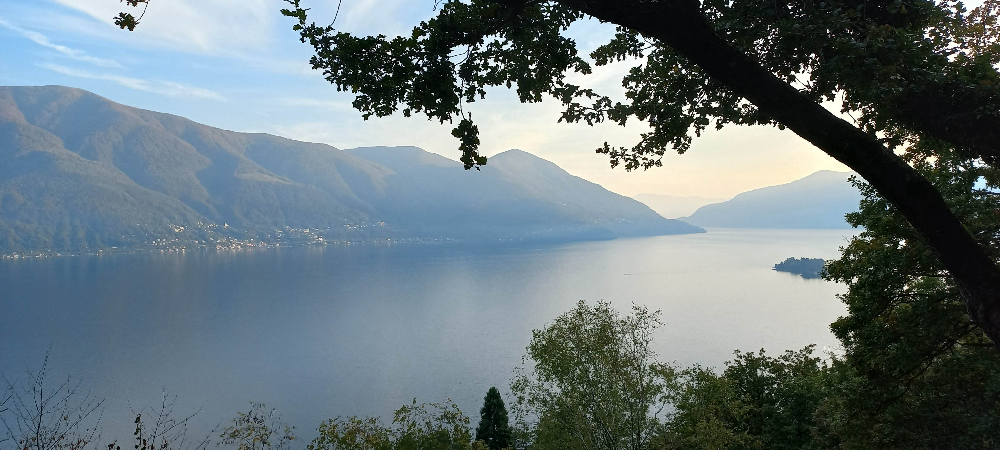
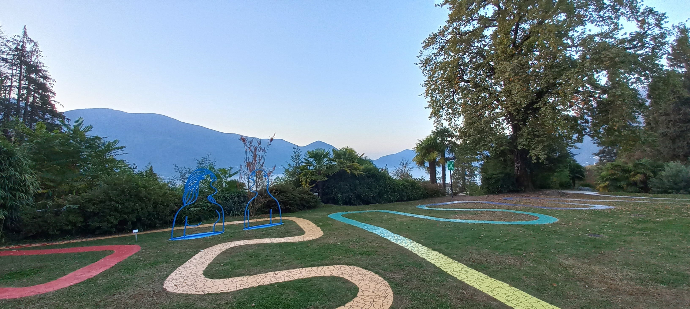

David Plüss zum 60. Geburtstag
Natürlich kann jeder Berg – je nach Weg- und Begehungserfahrung – zum Berg der Wahrheit werden. Das Erlebnis des Aufstiegs und die dadurch errungene Perspektive der entsprechenden Weitsicht können aussergewöhnlich sein und allem tagtäglichen Leben im Tal zur neuen Offenbarung werden. Deshalb erscheint es um so erstaunlicher, dass nur einem Berg der Schweiz genau dieser Name, Monte Verità (Berg der Wahrheit) gegeben wurde – wenn man denn überhaupt bei einer Höhe von 322 m.ü.M. von einem Berg sprechen will. Noch Anfang des 20. Jahrhunderts handelte es sich dabei um einen durch Reblausbefall bedrohten Weinberg, auf dessen kahler Kuppe Schaf- und Ziegenhirten ihre Herden weiden liessen. Aber im Jahr 1900 wurden der belgische Industrielle Henri Oedenkoven (1875–1935) und die Musikerin Ida Hofmann (1864–1926) bei der Suche nach einem Lebensort genau hier in Ascona fündig. Auf eben jenem Hügel gründeten sie ihre «vegetabile Cooperative», eine Siedlungsgemeinschaft auf zunächst veganer und später vegetarischer Grundlage und gaben dieser 1902 den Namen Monte Verità. Es waren also europäische, anarchisch und pazifistisch gesinnte Intellektuelle, die diesen Platz gleichsam als alternativ-lebenskulturellen Zauberberg mit Blick auf den Lago Maggiore für sich ausgewählt hatten.
Der Blick vom Monte Verità über den Lago Maggiore. (Foto: Thomas Schlag)
Im Lauf der folgenden beiden Jahrzehnte wurde der Monte Verità zum Experimentierraum für ein Leben, das sich kaum deutlicher von der technologisch-industriellen Fortschrittseuphorie und den damit verbundenen europäisch-militaristischen Stahlgewittern hätte unterscheiden können. Dass sich die Schweiz hier einmal mehr als internationaler Zufluchtsort – nota bene für diejenigen, die es sich leisten konnten – zeigte, sei an dieser Stelle ebenfalls erwähnt. Man muss den Gründungsfiguren zugutehalten, dass sie mit dieser Namensnennung und überhaupt ihrer Initiative von Beginn an nicht darauf abzielten, nun etwa ein konsistent-ideologisches Wahrheitsgebäude zu errichten oder ideologische Einheitlichkeit anzustreben. Die Signatur «Monte Verità» wollte nicht den Anspruch signalisieren, im Besitz der Wahrheit zu sein. Vielmehr sollte der neue Name das Bemühen, wahrhaftig zu leben, zum Ausdruck bringen. Ida Hofmann schrieb dazu konsequenterweise experimentell-unkonventionell in der hauptsächlich von Oedenkoven entwickelten neuen ortografi: «Die bedeutung des fon uns gewälten namens der anstalt [ist so] zu erklären, das wir keines wegs behaupten, die ‹warheit› gefunden zu haben, monopolisiren zu wolen, sondern dass wir entgegen dem oft lügerischen gebaren der geschäftswelt u. dem her konvenzioneler forurteile der geselschaft danach streben, in wort u. tat ‹war› zu sein, der lüge zur fernichtung, der warheit zum sige zu ferhelfen.» (Landmann: Ascona, 60f).
Experimentelle Erfahrungen
Man könnte hier viel über die hochdynamischen zwei Jahrzehnte und die
unzähligen Besucherinnen und Besucher sagen, die sich den Anwendungen im
dort gegründeten Sanatorium anvertrauten, auch Tanz, Theater, dem
Tennisspiel und der Lebenslust frönten und so dem Berg seinen neuen –
und im Tal durchaus auch verruchten – Ruf verschafften. Wie man sich
dieses wahrhaftige Leben unter den Lebensliebhabern beiderlei
Geschlechts, den Theosophen, Lebensreformerinnen, Anarchistinnen,
Kommunisten, Sozialdemokraten, Psychoanalytikerinnen, Literaten,
Schriftstellerinnen, Dichtern und Künstlerinnen und schliesslich den
Emigrantinnen und Emigranten des ersten Weltkrieges hier wohl vorstellen
musste? Ob man es hier womöglich gar mit sakraler Topografie zu tun hat?
Da er mir biografisch besonders naheliegt, verweise ich gerne auf
Erfahrungen des schwäbisch-internationalen, pietistisch geprägten und
global-interreligiösen Hermann Hesse (1877–1962), der auf dem Berg
mehrfach «Kurgast» war. Hesse begab sich 1906 und 1907 ins dortige
Sanatorium – jeweils zur Alkoholentziehungskur. Offensichtlich hatte er
dabei jeweils auch einige Zeit in der naheliegenden sogenannten
Gräser-Höhle bei Arcegno verbracht, dort gefastet und meditiert. Er
unterzog sich einer selbst entworfenen Kur, bei der er, «nur mit einer
Decke ausgestattet, nackt in einer Hütte haust, sich ab und zu in Erde
eingräbt und sich nur von Wasser und Beeren ernährt». (Prinz,
Und jedem Anfang wohnt ein Zauber inne, 149). Diese Erfahrungen
schildert Hesse in der autobiografischen Erzählung In den Felsen. Darin
zeigt sich exemplarisch diese Erfahrung, die ausgezehrte europäische
Intellektuelle offenbar auf diesem Berg mit Eremitentum und asketischer
Spiritualität machten. In seinem Gedicht «Bei Arcegno» schreibt Hesse
1917 von der Erfahrung des «Zauberernstes» in diesem «heiligen Land»:
«…hier bin ich hundertmal Den stillen Weg der Einkehr in mich selbst Im
Sinnbild einsamen Geklüfts gegangen Und geh ihn heute neu, mit anderem
Sinn, Doch altem Ziel, und geh ihn niemals aus … Nimm wieder hin ein
aufgetanes Herz Das nichts mehr will, als euren heiligen Stimmen Mit
willigen Sinnen dankbar offenstehn». (Hesse, Bei Arcegno, 436).
Aber offenkundig war die Berggemeinschaft auch nicht ohne toxische
Anteile. Schliesslich zerbrach sie an zu häufiger Uneinigkeit und
interessanterweise offenbar auch aufgrund von zu wenig regelgeleitetem
Zusammenhang und zu viel ‹Schmarotzertum›, wie es hiess. Hofmann und
Oedenkoven gaben den Monte Verità und das Experiment schon im Jahr 1920
wieder auf.
Neuschöpfungen und Anknüpfungen
Um 1925 wurde das Gelände vom Wuppertaler Industriellen und Kunstmäzen Eduard von der Heydt (1882–1964) gekauft, der dort ein touristisches Zentrum gründete und ein Hotel im vom «Neuen Bauen» geprägten rationalen, funktionalen Stil durch Emil Fahrenkamp (1885–1966) errichten liess. Gemäss dem testamentarischen Willen von der Heydts, demgemäss «der Monte Verità für hochstehende künstlerische und kulturelle Tätigkeiten von internationalem Anspruch genutzt wird», ging der gesamte Komplex 1964 in den Besitz von Republik und Kanton Tessin über. Bedeutsam für die theologische Forschung war dies nicht zuletzt deshalb, weil 1989 der Kanton und die ETH Zürich die Stiftung Monte Verità ins Leben riefen. Diese verwaltet das gleichnamige Kongress- und Kulturzentrum, sowie die Congressi Stefano Franscini, eine Begegnungsplattform zur Durchführung von internationalen Kongressen. Und so wurde seitens der Zürcher Praktischen Theologie der Berg der Wahrheit in den vergangenen fast zwanzig Jahren vielfach für Tagungen genutzt. Vielleicht nicht ganz im Geist der anarchisch-pazifistischen Anfänge, und eher selten für Tanz, Theater und Askese, aber doch mindestens als praktisch-theologischen Diskurs- und Experimentierraum für den Austausch über Forschungsprojekte, Kooperationsideen sowie internationale Netzwerkbildung.
Der Blick vom Bauhaushotel auf dem Monte Verità auf den Meditationsweg. (Foto: Thomas Schlag)
Und darüber hinaus gibt es mindestens doch einige und vielleicht sogar wahrheitsbezogene, existentiell erfahrbare und theologisch-intellektuell erfassbare Anknüpfungspunkte an die Anfangszeit des Berges. Bis zum heutigen Tag kann man dort vegetarische Kost bestellen, die tatsächlich in allerhervorragendster – sozusagen höchst authentischer – Qualität zubereitet wird. Ein in kleinen bunten Mosaiksteinchen gelegter Meditationsweg lässt sich intensiv fürs individuelle Flanieren und Meditieren nutzen. Den ursprünglichen Tennisplatz hat man auch wieder zum Leben wiedererweckt. Im 2017 wiedereröffneten Museum Casa Anatta kann man tief in die Text- und Bilderwelten der damaligen Zeit eintauchen. Und überhaupt eröffnet die Topographie und Atmosphäre des ganzen Hügels unterschiedlichste Perspektiven ins Ferne und Naheliegende, ins Hohe und Weite. So hält der «Berg der Wahrheit» bis in die Gegenwart hinein die Frage danach offen, was es in all den technologischen Entwicklungen der Gegenwart bedeuten könnte, an diesem besonderen Topos den heiligen Stimmen mit willigen Sinnen dankbar offen zu stehn’.
Thomas Schlag ist Professor für Praktische Theologie mit den Schwerpunkten Religionspädagogik Kirchentheorie und Pastoraltheologie. Er ist Vorsitzender der Leitung des Zentrums für Kirchenentwicklung (ZKE) und Direktor des Universitären Forschungsschwerpunkts «Digital Religion(s)».
Weitere Artikel von {{ author.author }} finden Sie hier:
Zur Vertiefung:
- Folini, Mara: Der Monte Verità von Ascona, Zürich 2013.
- Hesse, Hermann: Bei Arcegno (1917), in: Die Gedichte: 1892–1962, herausgegeben von Volker Michels, Frankfurt am Main 1977.
- Landmann, Robert: Ascona – Monte Verità. Auf der Suche nach dem Paradies, Frauenfeld/Stuttgart/Wien 2000.
- Meng, Guofeng: Begegnung mit dem Eremiten. Zur Thematik des Einsiedlertums im Werk Hermann Hesses, Bamberg, 2019.
- Prinz, Alois: Und jedem Anfang wohnt ein Zauber inne. Die Lebensgeschichte des Hermann Hesse, Frankfurt am Main 2006.
- Radermacher, Martin: «Hermann Hesse – Monte Verità. Wahrheitssuche abseits des Mainstreams zu Beginn des 20. Jahrhunderts», in: Zeitschrift für junge Religionswissenschaft 6 (2011), verfügbar unter www.journals.openedition.org/zjr/710 (01.08.2024).
- Schwab, Andreas: Monte Verità – Sanatorium der Sehnsucht, Zürich 2003.
- Schwab, Andreas: Zeit der Aussteiger. Eine Reise zu den Künstlerkolonien von Barbizon bis Monte Verità, München 2021.
- Schwab, Andreas / Lafranchi, Claudia (Hgg.): Sinnsuche und Sonnenbad. Experimente in Kunst und Leben auf dem Monte Verità, Zürich 2001.
- Szeemann, Harald: Monte Verità - Berg der Wahrheit. Lokale Anthropologie als Beitrag zur Wiederentdeckung einer neuzeitlichen sakralen Topographie, Milano 1980.